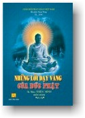

| BuddhaSasana Home Page |
Vietnamese, with VU-Times font |
|  |
Những Lời Dạy Vàng của Đức Phật Tỳ kheo Thiện Minh Soạn dịch từ Miến Ngữ |
-ooOoo- KÍNH DÂNG LÊN GIÁC LINH: * Cố Đại lão Hòa thượng Hộ Tông (Bậc khai
sáng Phật Giáo Nguyên Thủy Việt Nam)
-ooOoo- Nammo tassa Bhagavato Arahato Sammasambuddhassa Con đem hết lòng thành kính đảnh lễ Đức Thế Tôn. Do nhờ oai đức Tam Bảo và phước phát sanh do pháp thí này xin hộ trì đến chư thiện tín xa gần thành tựu năm điều hạnh phúc: sống lâu, sắc đẹp, an vui, sức mạnh, nhất là trí tuệ sẽ phát sanh đến người. Cầu mong cho tất cả hoan hỷ phần phước thiện này để được sự an lạc lâu dài. Buddhaṃ saranaṃ gacchāmi Con đem hết lòng thành kính xin quy y Phật. LỜI TÁC GIẢ Trong thế giới vạn vật hữu hình nầy, tất cả sự vật hiện tượng xảy ra trong cuộc sống xung quanh ta, đều phát sanh từ những nguyên nhân ban đầu của nó. Chỉ khác nhau là chúng bắt nguồn từ những nguyên nhân trực tiếp hoặc gián tiếp, gần hoặc xa mà thôi. Những điều xảy ra từ những nguyên nhân trực tiếp (gần) thật dễ thấy. Ví như sự lao đông trong cuộc sống. Nếu ta lao động nhiều thì ta đạt được thành quả nhiều, Nếu ta lao động ít thì ta đạt được thành quả ít. Nhân: (năng lực lao động ít hoặc nhiều) Quả: (sản phẩm của lao động tương ứng). Nếu ta gieo giống là hạt chanh thì được quả chua. Nếu ta gieo giống là hạt mít thì được quả ngọt. Nhân nào quả nấy âu cũng là một lẽ tự nhiên cuả tạo hóa vậy. Sự lao động chân tay hay lao động trí óc cũng cho kết quả tương tự như thế. Mặt khác, bên cạnh từ Nhân gieo để hỗ trợ thành quả mong muốn, Duyên (hay điều kiện): đất, nước, phân, các kỹ thuật khoa học chăm sóc... cũng thật cần thiết và quan trọng. Như vậy thành quả đạt được là do sự đầu tư từ:
Do nhân là sự tương tác giữa chất này và chất khác trong những điều kiện khác nhau, mà sự tạo thành một chất mới là quả: Trong các nguyên lý tạo nên nhiệt năng, cơ năng, động năng ... đều mặc nhiên vận hành theo nguyên lý Nhân-Duyên-Quả nầy. Bởi cái này có thì cái kia có. ... (Nhân) + (Duyên) → (Quả 1) + (Duyên) → (Quả 2) + (Duyên) → (Quả 3) + (Duyên) → (Quả 4) ... ... và cứ tiếp tục một chuỗi Nhân-Duyên-Quả vô cùng vô tận như vậy. Xét về yếu tố thời gian thì cái trước là nhân, sinh ra cái sau là quả. Nếu chúng ta có tâm tốt, lời nói tốt và hành động đối đãi tốt với người hoặc chúng sanh khác thì được người hoặc chúng sanh khác thương yêu quý mến lại. Đó cũng là lẽ thường trong cuộc sống. Bên cạnh những sự vật, hiện tượng xảy ra xung quanh chúng ta, xuất phát từ những nguyên nhân gần (trực tiếp) thật là dễ thấy, dễ biết; còn có những điều xảy ra mà chúng ta khó hiểu và khó thấy được nguyên nhân của nó xuất phát từ đâu? Chẳng hạn như, có lẽ trong tất cả chúng ta ai cũng có lần gặp những người lạ chưa từng quen biết. Mới lần đầu gặp nhau đã phát sinh thiện cảm và đem lòng thương yêu quí mến nhau, hoặc sanh tâm không ưa thích, ác cảm với nhau dầu chỉ mới lần đầu gặp nhau! Đây là những việc thật sự lạ lùng mà chúng ta thường không thể hiểu được tại vì sao! Điều này đâu hẳn là giữa chúng ta và những người lạ mới gặp đó chưa từng có nhân duyên với nhau từ trước!? Nói về lý Nhân-Duyên-Quả có khi cũng thật là đơn giản và có nhiều trường hợp thật là vi tế, thậm thâm vi diệu. Lý ấy với trí tuệ thường nhân chúng ta không thể nào hiểu tới được. Thật vậy, có lần Ngài Anan (thị giả - bậc Đa văn đệ nhất trong hàng môn đồ - Đại đệ tử của Đức Phật) cho rằng: "Mặc dù lý Nhân-Duyên-Quả có vẻ khó khăn, nhưng thật ra giáo lí nầy rất đơn giản". Thế là Ngài Anan bị Đức Phật quở về nhận xét nầy. Đức Phật khẳng định rằng giáo lí về Nhân-Duyên-Quả rất là thâm sâu. Chỉ có trí tuệ siêu quần của một vị Phật mới thấu được - Ngài đã thấy vô lượng vô biên kiếp quá khứ lẫn tương lai của chúng sanh. Do hạnh nghiệp dị biệt của mỗi chúng sanh đã tạo mà chúng sanh có loài sinh làm loài Trời, có loài sinh làm người hoặc thọ sinh vào địa ngục, ngạ quỷ, súc sanh .v.v.. Có kẻ cao sang, người hạ liệt, có người trí minh tuệ, người vô trí, kẻ đẹp, người xấu... Vì thương muôn loài chúng sanh nên Chư Phật ra đời chỉ dạy hai con đường an vui: - Một là con đường Phúc lạc an vui lâu dài, luân lưu trong hai cõi Trời, Người. - Hai là con đường Niết Bàn an vui cao thượng trường cửu, giải thoát vĩnh viễn cảnh khỗ sanh tử luân hồi trong 3 giới 4 loài. Tập sách nhỏ nầy, bần đạo đã phiên dịch, soạn thảo từ kinh sách chánh truyền của quốc giáo Phật Giáo Nam truyền Myanmar. Nội dung chủ yếu giới thiệu tóm tắt sơ lược một số vấn đề cơ bản. Đây là những vấn đề cần thiết dành cho những người sơ cơ mới bắt đầu tìm hiểu đến lời dạy Đấng Cha Lành. Về những điều hay lẽ phải, sự thật chân lí vốn hằng hiện hữu vận hành mọi nơi mọi lúc trong cuộc sống của chúng ta. Đồng thời cũng dành cho hàng nam nữ cư sĩ tại gia những điều quan trọng cốt lõi, để áp dụng trong cuộc sống giữa các mối quan hệ từ gia đình đến xã hội. Đặng cho được nhiều sự lợi ích và an vui lâu dài. Nhờ sự đóng góp kỷ thuật bìa, đánh bản thảo của tỳ kheo Tuệ Lực, tỳ kheo U Kovida (Myanmar), đạo hữu Ngô Thành Nghĩa, Đặng Thị Bích Hà, Nguyễn Sam, Ngô Thành Thịnh, Nguyễn Thị Thiên Kim cùng chư Thiện tín đóng góp phần công đức. Nguyện cầu Hồng Ân Tam Bảo và Phước Báu phát sinh do Pháp thí thanh cao này hộ trì đến quý vị cùng bửu quyến sức khỏe, thịnh vượng, phú quý, thân tâm thường an lạc, hằng tấn hóa trong mọi phước thiện và nhất là sớm hội đủ duyên lành, đắc quả Niết Bàn an vui bất diệt, giải thoát sự buộc ràng sanh tử trong ngày vị lai. Đồng thời xin hồi hướng Pháp thí này đến tất cả chúng sanh, mong cho tất cả chúng sanh hoan hỷ với phần phước thiện thanh cao này được an vui lâu dài. Với sự cố gằng hết mình, hiềm vì khả năng có hạn nên khó tránh khỏi sơ sót. Kính mong chư tôn hiền đức, các Bậc Thức giả cao minh, các bậc thiện trí thức hoan hỷ bổ chính, từ bi chỉ giáo. Bần đạo kính cẩn nghiêng mình, thọ nhận lời phê bình cũng như những cao kiến đóng góp xây dựng để những lần tái bản được hoàn thiện hơn. Xin chân thành tri ân đến quý vị. Phật lịch 2547/2003 -ooOoo- |
Cám ơn đạo hữu HT đã gửi tặng bản vi tính (Bình Anson, 11-2005)
[Trở về trang Thư Mục]